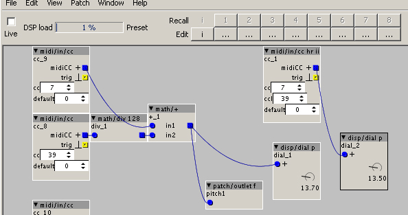

Hi everyone's,
I get some issues to work properly midi/in/cc hr, it seem I only get msb value at outlet. Did I miss something?
I'm on project of a kind of "continuous laser harp" , I send midi from a teensy board, I tried usbMidi and midi din 5 (via serial 31250).

with a dirty mixing two standart CC's (left of picture) I get my 14bit value but it's glitchy...
Also "midi/in/cc hr" seem not working at full range...
also here is an extract of code in C in teensy (arduino ide) : // Serial1.write(0xB6); Serial1.write(7); Serial1.write((pitch[0] >> 7) & 127);
// Serial1.write(0xB6); Serial1.write(39); Serial1.write(pitch[0] & 127);
//
//
usbMIDI.sendControlChange(0x07,(pitch[0] >> 7) & 127, 7);
usbMIDI.sendControlChange(0x27, pitch[0] & 127, 7);
}
both two packets (usb /din5) work for simple CC inputs
any ideas?
thank you